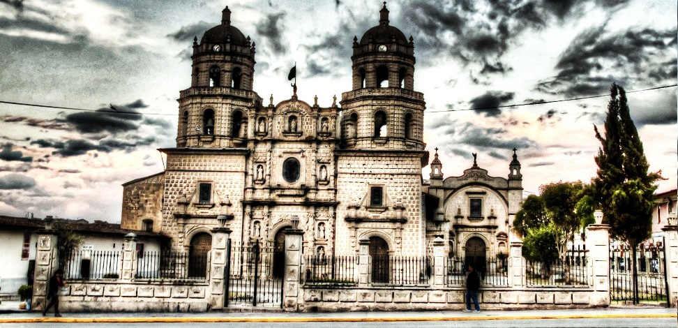
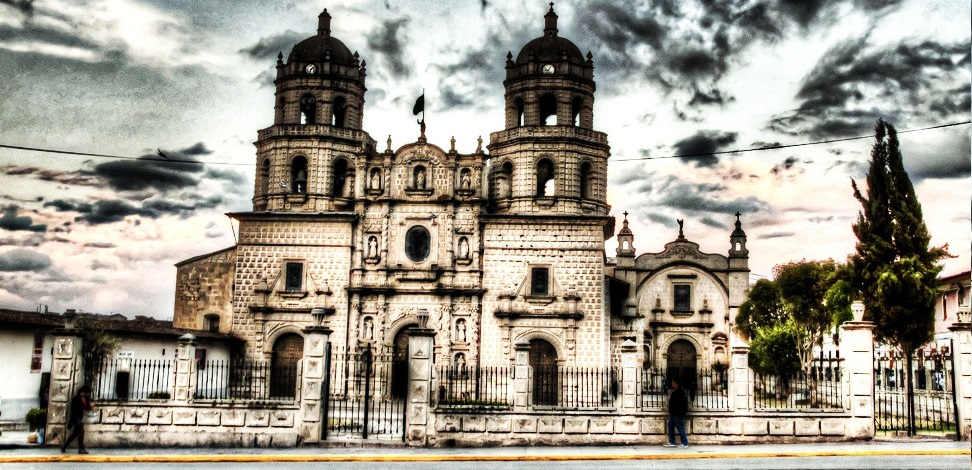

Provincias de Cajamarca con sus respectivos Distritos


Cajamarca
Escenario de los últimos latidos del Imperio Incaico. Noble corazón andino de seductores paisajes poblados del mejor ganado vacuno del Perú y una envidiable producción láctea. Acogedora ciudad de magnífica arquitectura colonial y tierra de historia con lugares como los Baños del Inca, las Ventanillas de Otuzco y Cumbemayo. Destino de naturaleza bucólica como la Ex-hacienda La Colpa y la Granja Porcón.

Datos Importantes
- Altitud: 2,750 mts. / 9,020 pies sobre el nivel del mar
- Tiempo: Seco con días soleados y noches frías
- Temperatura: 50 – 74 ºF – 10 – 24 ºC aproximadamente.
- Estacion Lluviosa: Diciembre a Marzo
-
Ubicación: Entre los paralelos 4 30' Latitud Sur y
los meridianos 77° 47' y 79° 20' de longitud oeste.
Festividades
Imagenes Festividades

Aniversario de Cajamarca

Fiesta de las Cruces
Semana Santa
Corpus Christi
Señor de los Milagros